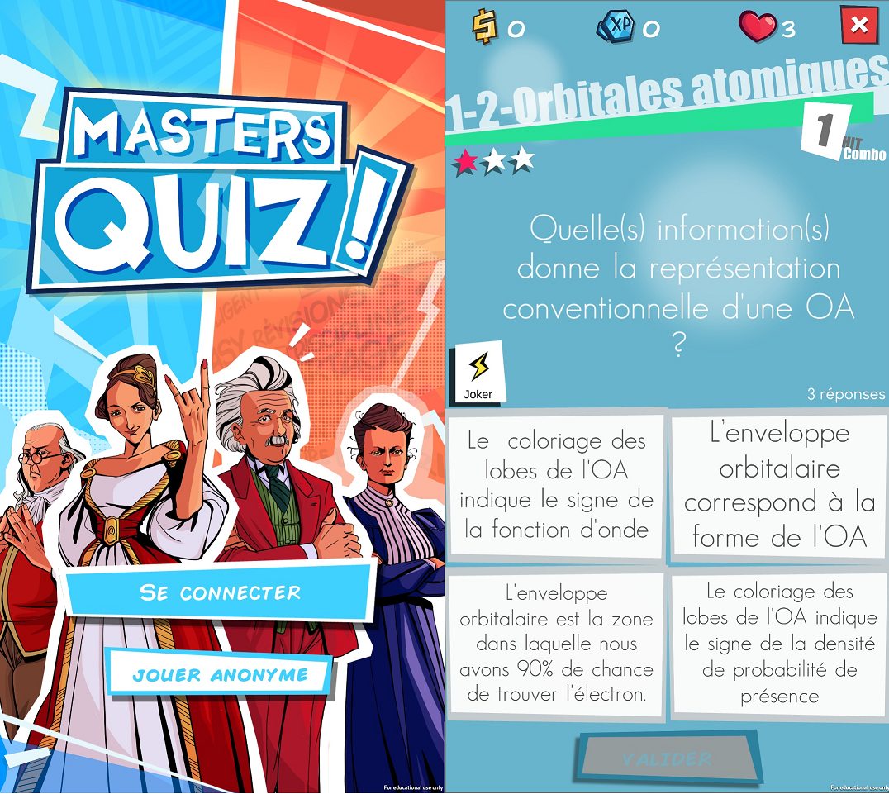
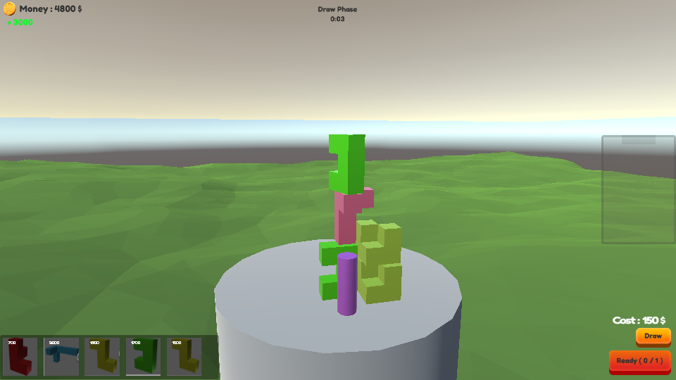
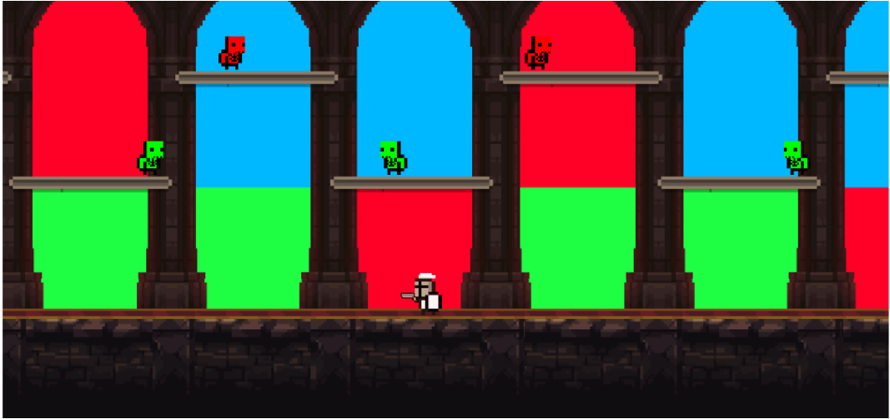
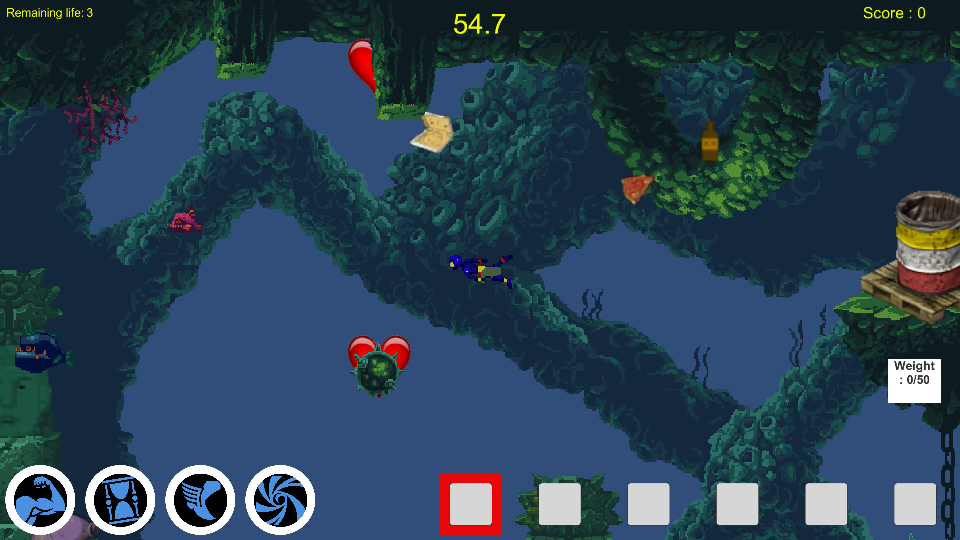

Dixit World
2019 - 2023
Adaptation sur mobile(Android/IOS) du jeu de société Dixit


Langage/technologie utilisées :
Unity, C#, JavaScript, Playfab
2019 - 2023
Adaptation sur mobile(Android/IOS) du jeu de société Dixit
2019
Masters Quiz est un jeu sur mobile développé par Ikigai, un groupe spécialisé dans le développement de jeux éducatifs au sein de Sorbonne Université. Ce jeu est à destination des étudiants de Sorbonne Université. Le but est de les aider à réviser, en jouant à un jeu qui les pousse à revenir pour l'amusement.
Equipe :
L'équipe d'Ikigai
Tâches principales :
Développment du mode multijoueur
Ajout de fonctionnalités sur les modes Challenge et Révision
Développement du mode Animation
Correction des éventuels bugs
Test
Optimisation
2018
TouchDown est un jeu multijoueur en réseau qui mélange les genres
capture de drapeau et tower defense
grâce à son système
de phases, qui se décompose en une phase pour poser des pièges et une phase de gameplay dynamique où l'on doit
apporter un cristal
dans le but adverse : le but étant de marquer le plus de point dans le temps imparti ou d'arriver à dix buts. Pour
cela, on incarne
l'un des trois personnages disponibles. Chacun possède trois sorts qui lui sont propres et deux pièges communs à
tous les personnages.
Les combats se font en équipe de tailles variables, et la carte s'adapte au nombre de joueurs en changeant de
taille.
Pour ajouter une dimension de découverte à notre jeu et que chaque partie soit unique, la carte est générée
aléatoirement grâce à
un système de blocs préfaits.
Equipe :
Gauthier BEROD
Elise COMBETTE
Quentin DECHAUX
Marion PELLICER
Paul SEICHAIS
Tâches principales :
Conception du jeu
Réseau / Lobby
Barre de vie
Création du Compteur et du Score
Gestion du piège de glace
Création de la phase "Inter-manche"
2018
Tower Mahyem est un jeu en 3D en réseau crée durant la WonderJam d'hiver. Le jeu devait respecter les thèmes : multijoueur, puzzle et stratégie et le thème : ordre et désordre. Ce jeu propose de construire votre tour en achetant différents blocs et en les posant, le but étant d'atteindre une certaine hauteur en premier. La particularité est que durant la partie il y a une phase où vous pouvez poser un bloc dans la zone adverse pour l'empêcher d'atteindre l'objectif.
Equipe :
Gauthier BEROD
Elise COMBETTE
Maxime MORETTE
Ghislain ST-DENIS
Mark-Olivier ST-LAURENT CYR
Tâches principales :
Conception du jeu
Mise en place de photon / Création du lobby
Contrôles Utilisateurs
Création des blocs et des cartes
2017
Vitrail buster est un shooter en 2D entrecoupé de phase puzzle créé dans le cadre d'un projet scolaire. Le joueur progresse dans un univers où les fantômes volent la couleur du monde. Pour sauver ce monde et contrecarrer les plans du chef des fantômes, le héros va devoir affronter ces derniers grâce à une arme laser, le vitrail blaster. Il tire un rayon qui prend la couleur du vitrail en arrière-plan du joueur. En fonction de la couleur du tir, le joueur pourra éliminer les ennemis de la couleur correspondante.
Equipe :
Stiven AIGLE
Hugo BRUNET
Vianney GUISON
Tâches principales :
Conception du jeu
Intelligence artificielle des ennemis
Menu
Gestion de la musique et du son (asset)
Mécanique du boss
Mécanique de blocage des salles
2017
Underwater garbage man, projet en 2D créé pour la WonderJam d'automne. Garbage man est un super héros qui s'est reconverti à l'écologie depuis que le crime n'existe plus dans son monde. Désormais il utilise ses pouvoirs pour nettoyer l'océan le plus rapidement possible. Les thèmes course, arcade et puzzle étaient imposés.
Equipe :
Benjamin DRAGOURET
Alexandre FORTIN
Maxime MORETTE
Duc Hau NGUYEN
Mark-Olivier ST-LAURENT CYR
Tâches principales :
Conception du jeu
Inventaire
Développement du pouvoir d'attirance
2017
UCT, un contre tous UCT est un projet en 3D qui a été réalisé en
autoentrepreneur dans le cadre de
notre stage en
partenariat avec Igloo Spirit.
UCT, Un Contre tous, propose une expérience asymétrique de combat en temps réel. Un joueur incarne une créature
légendaire avec
un casque de réalité virtuelle, les autres joueurs, eux joueront les aventuriers et l'affrontent sur leurs
ordinateurs. Le joueur
en VR peut alors apprécier de jouer son boss favori, ressentir et utiliser sa toute-puissance. Le tout immergé
dans la réalité
virtuelle, utilisant ses mains pour frapper et lancer des capacités. Les joueurs PC seront alors confrontés à un
réel challenge :
celui d'affronter grâce à leurs combos, non pas une IA prévisible mais un joueur qui, comme eux, s'adapte à leurs
stratégies !
Equipe :
Gauthier BEROD
Romain FAILLA
Olivier NISOLE
Tâches principales :
Conception du jeu
Interface côté joueurs PC en réseau
Fonctionnalité côté joueurs PC en réseau
Création de sorts côté joueurs PC
Développement de quelques combos en réseau
2017
Duplicate est un projet scolaire en 3D qui a été créé dans le but de participer à l'Imagine Cup concours organisé par Microsoft en 2016-2017. Duplicate est un jeu de type puzzle sur le thème de la solitude. Duplicate se base sur une mécanique de création de double temporel pour résoudre les puzzles. Le thème de la solitude est transmis grâce à l'histoire qui conte une expérience comportementale pour montrer l'importance du travail en groupe. Plus d'informations dans la vidéo.
Equipe :
Gauthier BEROD
Blandine FALLON
Vincent PERIGOIS
Tâches principales :
Etude de marché
Conception du jeu
Développement de plusieurs mécaniques
Création du tutoriel
2016
Ce jeu de gestion en 2D a été créé dans le cadre d’un projet scolaire. Il consiste à gérer un zoo. Le joueur pourra acheter divers animaux parmi ceux proposés en boutique et devra faire attention à leur finance pour éviter la faillite.
Equipe :
Galaad COTTEL
Blandine FALLON
Tâches principales :
Conception du jeu
Créations des fonctions liées à l'économie